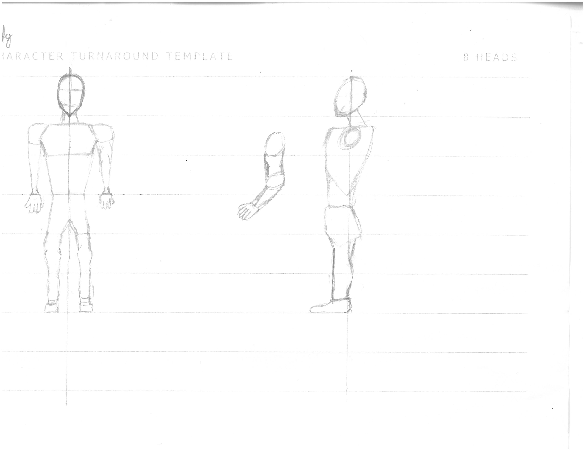
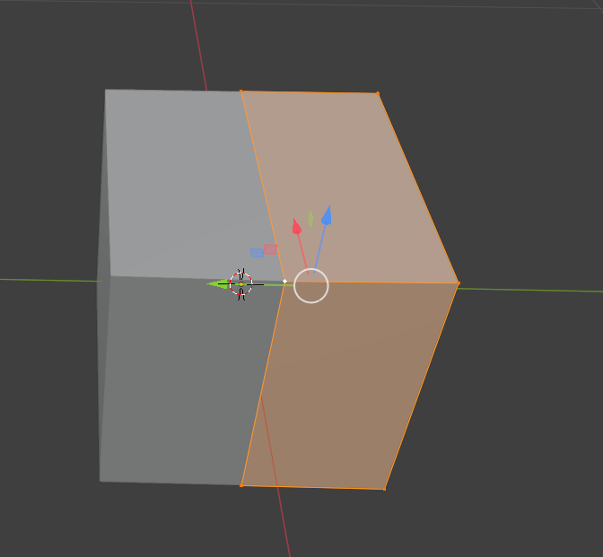

I created a base view of the front and a side view of the
character by drawing them using the 7 head stratergy.
I used each body part like a head
.jpg)
character by drawing them using the 7 head stratergy.
I used each body part like a head


| Name | Feedback |
|---|---|
| Brandon | 1. The shoulders are too wide and too straight. Make the shoulders more narrow. The calves are not proportionate
2. No because they need to be in porportion if they were then 8-16 year olds would like this character. |
| Daequan | 1. The waist is too small and the legs are too small.
2. Yes, 8-16 year old willwill like this character due to kids around that age like buff characters. |
by making them more curved so they point out
alot I also gave the head more proportionate. 
and then mirrored it so it looks symmetrical.


| Name | Feedback |
|---|---|
| Brandon | 1. The shoulders are too wide and too straight. Make the shoulders more narrow. The calves are not proportionate
2. No because they need to be in porportion if they were then 8-16 year olds would like this character. |
| Daequan | 1. The waist is too small and the legs are too small.
2. Yes, 8-16 year old willwill like this character due to kids around that age like buff characters. |
by making them more curved so they point out
alot I also gave the head more proportionate.